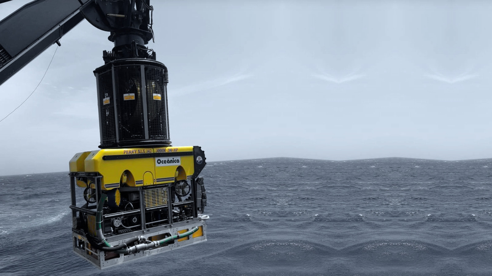
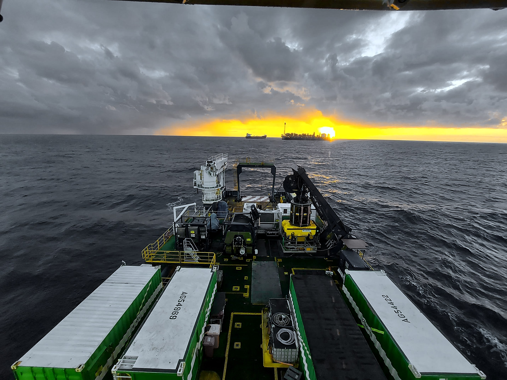

3000 MProfundidade nominal
Como impresso no equipamento
LARS
Lançamento e recuperação
TMS
Gerenciamento do umbilical
ROV Work Class
Perry XLX 142 · 200 HP
Altura do conjunto · — m · ficha técnica
Sistema de ROV no convés
O mesmo tipo de equipamento, a bordo
Unidade de produção
No horizonte · distância não medida
Escala
oceânica.
Folha02 · Escala
Frota18
RI · 1T26
Site: 11
ROVs55
RI · 1T26
Site: 56
Pessoas2.378
RI · 1T26
Site: “+ 2.300”
Divergências entre site (16/11/2026) e RI (13/05/2026) · validar antes de publicar
EscopoInspeção, reparo e resposta a emergências · de 0 a 3.000 m · desde 1978
ProjetoOceânica · Engenharia offshore e subsea
Folha01 · Presença
AssuntoROV Work Class
Nível 1/4
EnquadramentoEquipamento